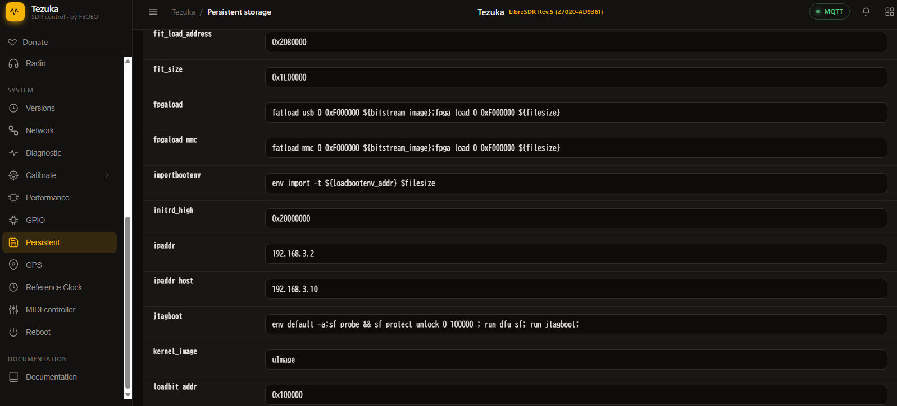
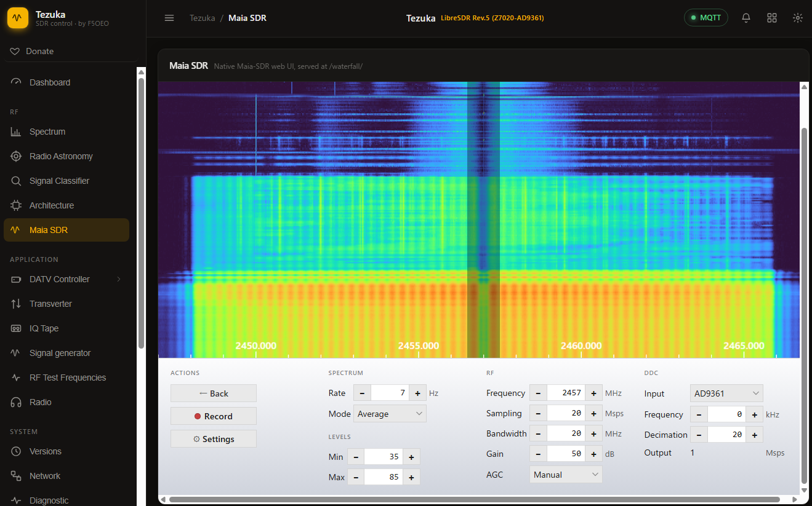
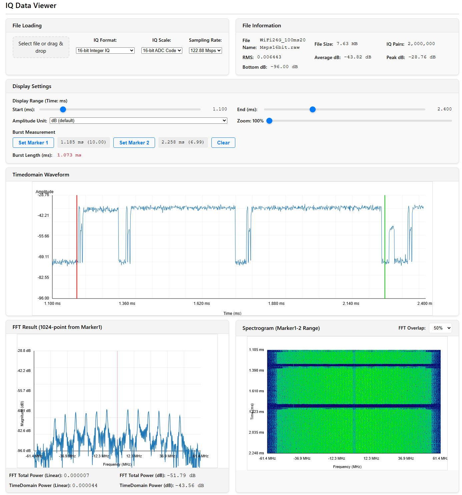

HamGeek AD9363をアリエクで購入。board rev. 5.とのこと。
SDカードはついてこないので、32GBのカードにtezuka firmwareを焼く。
とりあえずv0.3.21のLibreSDR用を焼いたら動いた。
https://github.com/F5OEO/tezuka_fw
DEBUG側のUSB-CをPCに接続すると、シリアルポートが4つ出現する。3番目(port C)がLinuxに入れる当たりポート。ボーレートは115200。 何かの役に立ちそうなのでLinuxのブートログを置いておく。petalinux_bootlog.txt
root/analogでログインする。USB接続じゃなくてEther接続で使いたいのでIPアドレスを確認すると、usb0に192.168.2.1/24が割り当てられている。宅内LANとSubnetがかぶっているので使えない。
usb0には192.168.3.2/24 を割り当てて回避。eth0はDHCPでアドレス拾えている。Static IPを割り当てるべきなんだろうかとりあえずこれでいく。
# ip addr
1: lo: <LOOPBACK,UP,LOWER_UP> mtu 65536 qdisc noqueue state UNKNOWN group default qlen 1000
link/loopback 00:00:00:00:00:00 brd 00:00:00:00:00:00
inet 127.0.0.1/8 scope host lo
valid_lft forever preferred_lft forever
2: eth0: <BROADCAST,MULTICAST,UP,LOWER_UP> mtu 1500 qdisc fq state UP group default qlen 1000
link/ether 00:60:88:ec:01:7b brd ff:ff:ff:ff:ff:ff permaddr 7e:60:15:36:94:e8
inet 192.168.2.131/24 brd 192.168.2.255 scope global eth0
valid_lft forever preferred_lft forever
3: sit0@NONE: <NOARP> mtu 1480 qdisc noop state DOWN group default qlen 1000
link/sit 0.0.0.0 brd 0.0.0.0
4: usb0: <NO-CARRIER,BROADCAST,MULTICAST,UP> mtu 1500 qdisc pfifo_fast state DOWN group default qlen 1000
link/ether 00:05:f7:0b:9a:75 brd ff:ff:ff:ff:ff:ff
inet 192.168.3.2/24 scope global usb0
valid_lft forever preferred_lft forever
5: gse0: <POINTOPOINT,MULTICAST,NOARP,UP,LOWER_UP> mtu 1500 qdisc fq state UNKNOWN group default qlen 500
link/none
inet 44.0.0.2/32 scope global gse0
valid_lft forever preferred_lft forever
これでWebブラウザから管理画面に入れるようになった。 組み込みpetalinuxなので今やったIPアドレス設定は再起動で消えてしまうので、Web管理画面からPersistent設定のipaddrを設定する。この設定はSPI-Flashに書かれる模様。

IQ転送にはlibiioを使っているので、Windows用クライアントツールが必要なんだが、入れ方の正解がわからない。↓のWindows用バイナリを展開してパスを通せばよさそうなんだが、コレジャナイ感がする。
https://github.com/analogdevicesinc/libiio
ADI ACEを入れると必要そうなものは一式入る。libiio関連バイナリがc:\Windows\system32\ にブチ込まれるぞ。
コマンドプロンプトでiio_info実行してデバイス情報取れればOK. iio_info.txt
iio_info.exe -u ip:192.168.2.131
宅内WiFi 2.4GHzをIQキャプチャする。管理WebのSpectrogramで様子を見る。

周波数やGain設定はMaia SDR側で設定する。CLIでもできるが、IIOが難解すぎてやりたくない。
この状態から、↓のコマンドでIQキャプチャできる。
iio_readdev -u ip:192.168.2.131 -b 4000000 -s 2000000 cf-ad9361-lpc 1>.\iqcap20Msps.raw
-s はサンプル数。-b はiioバッファサイズなのだが詳細不明。
あまり大きい値を指定するとlinux UARTにエラーが出る。
cma: __cma_alloc: reserved: alloc failed, req-size: 3907 pages, ret: -12
cma: number of available pages: 187@69+189@4163+189@8259+4029@12355=> 4594 free of 16384 total pages
とりあえずそれっぽい波形は取れたが若干怪しい。 WiFi24G_100ms20Msps16bit.raw
